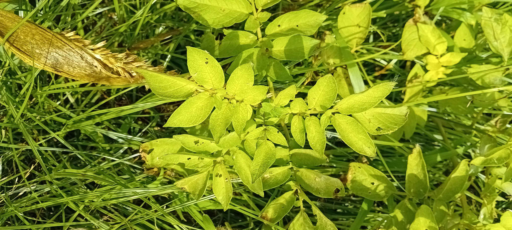
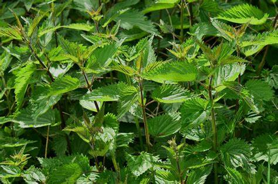

Des mauvaises herbes
monocotylédones &
dicotylédones.
Les "mauvaises herbes" sont des plantes considérées comme indésirables dans un contexte donné, souvent dans les jardins, les pelouses, les cultures agricoles ou même dans les espaces naturels aménagés. Le terme "mauvaises herbes" est généralement subjectif et relatif à l'usage humain et à la gestion des terres. 
complètent leur cycle de vie en une année, de la germination à la production de graines, avant de mourir. Elles produisent beaucoup de graines, permettant leur propagation rapide et leur retour chaque année si elles ne sont pas bien gérées.
